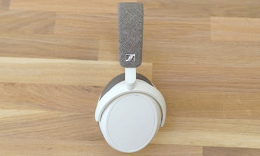
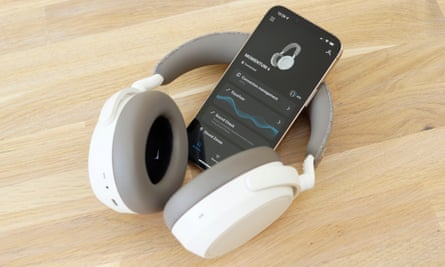
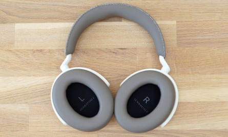
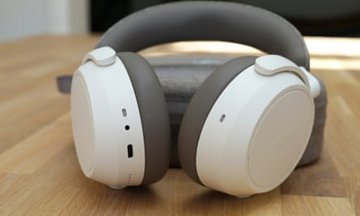
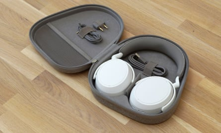

T he fourth-generation of the Momentum Bluetooth headphones from the renowned German audio manufacturer Sennheiser are a wholesale redesign, ditching their previous retro styling for something simpler and much more comfortable. All this with 60-hours of battery life.
Undeniably pricey at £299 ($349.99/A$549.99), the Momentum 4 Wireless are still £50 cheaper than their predecessors and undercut key competitors from Sony, Bose and Apple.
Extremely comfortable to wear
The new headphones have a few nice design touches, such as a fabric headband and metallic logos, but are much less showy than their eye-catching predecessors.Photograph: Samuel Gibbs/The Guardian
The Momentum 4 are designed from the ground up to be a lot more comfortable and functional than previous versions, with a more understated look. The ear cups have plenty of adjustment and super-soft and plush cushions for a pressure-free fit on the sides of your head. The headband’s wide, soft-touch plastic lining stops it from sliding about on your hair, while an extra-soft bit right at its apex relieves pressure on the ridge at the top of your skull.
They are well balanced and the most comfortable headphones I have worn in a very long time, even over eight-hour listening sessions.
Controls and connectivity
The Sennheiser Connect app handles switching between devices, equaliser and noise-cancelling modes, firmware updates and other settings.Photograph: Samuel Gibbs/The Guardian
The headphones support Bluetooth 5.2 with the universal SBC and AAC audio formats for Apple devices and others. But they also support the very latest aptX Adaptive format, which offers higher audio quality, lower latency and is backwards compatible with the older aptX standard, which is common on Windows PCs and Android devices.
Multipoint connects two devices at the same time, such as your phone for music and your laptop for video calls, and works extremely well. They come with a 2.5mm-to-3.5mm analogue headphones cable and can play audio over USB-C at the same time as charging, similar to the B&W PX7 , giving you plenty of connectivity options.
The touch panel on the right ear cup supports a set of excellent gesture controls. Swipe forward or backward to skip tracks, swipe up or down for volume, tap once to pause the music or twice to switch to the ambient sound mode. Unusually, you can also use a smartphone-like pinch-to-zoom gesture to slowly turn noise-cancelling down and ambient sound up, or vice versa, a bit like turning the volume up or down on the outside world.
The music will pause when you take the headphones off while a single button activates your phone’s voice assistant or turns the headphones on and off. Press the button five times and you can turn off Bluetooth but still use the noise-cancelling, a mode designed for use on a plane without having to listen to music.
Specifications
- Weight: 293g
- Drivers: 42mm
- Connectivity: Bluetooth 5.2 with multipoint, 2.5/3.5mm, USB-C (charging and audio)
- Bluetooth codecs: SBC, AAC, aptX Adaptive
- Battery life: 60 hours (ANC on)
Cracking sound and effective noise cancelling
The cushions are super-soft and do a good job of blocking out the world, allowing the large 42mm drivers to shine.Photograph: Samuel Gibbs/The Guardian
The Momentum 4 continue Sennheiser’s long tradition of fantastic sound. They are the sort of quality headphones that will have you hearing new elements in your favourite tracks, right up there with Sony , Apple and B&W . They have a pleasing balance between powerful, deep bass, warm mids and sparkling highs, without any one element overriding the others. They maintain the separation of tones and preserve detail even in the most complex tracks.
The headphones do an excellent job with all music genres, making them extremely adaptable while also handling action-filled movie soundtracks with suitable bombast and immersion. The Control app has an equaliser, bass boost, podcast mode and a system that helps you tailor the sound of the headphones to your liking.
They have effective noise-cancelling that can meaningfully reduce rumbles, fan and road noise, and do a reasonable job on higher-pitched tones such as voices or keyboard taps in an office. They can’t quite match the very best from Sony or Bose, but they aren’t too far off. The adaptive system automatically turns down the noise-cancelling when in quieter places and they handle wind noise very well – something that trips up some competitors.
You can also manually adjust how much outside sound is let in with a slider in the app or the pinching-to-zoom gesture on the headphones adjusting from maximum noise-cancelling to full transparency, so you can have as little or as much awareness of the outside world as you prefer.
The transparency mode is very good, too, although on maximum it is louder than not wearing the headphones. Finally, call quality is excellent, matching the very best headphones without a boom mic, even in noisy environments.
Extremely long battery life
It takes about two hours to fully charge them, with a five-minute quick charge adding up to four hours of playback when low. The headphones can be used when charging or when completely flat via the analogue cable.Photograph: Samuel Gibbs/The Guardian
The Momentum 4 last a full 60 hours of playback with noise-cancelling turned on, which is double their nearest competitors and long enough so you won’t have to worry about charging them very often. They automatically switch off after 15 minutes of being on standby or when placed in the case, too, but I found it more convenient to manually turn them off with the power button.
Sustainability
The battery in the headphones is not replaceable but Sennheiser estimates it will maintain at least 80% of its original capacity after 30,000 hours of listening, which is 27 years of listening three hours a day, meaning it is never likely to need replacing.
Spare parts including cushions and cables are available. The headphones do not contain any recycled material. Sennheiser Consumer’s parent company, Sonova, publishes sustainability reports but does not operate trade-in schemes in the UK.
Price
The Sennheiser Momentum 4 Wireless cost £299.99 ( $349.99 / A$549.99 ) in black or white and ship on the 23 August.
For comparison, the Bose QuietComfort 45 cost £319.95 , the Sony WH-1000XM5 cost £379 and Apple AirPods Max cost £549 .
Verdict
The Sennheiser Momentum 4 Wireless are some of the very best-sounding, longest-lasting and the most comfortable noise-cancelling headphones available.
What they lack in the visual flair of their predecessors, they make up for in performance. The battery lasts for a full 60 hours of playback, with effective noise-cancelling. They are well balanced with thoughtful tweaks to make them super-comfortable even for very long listening sessions.
They support the latest aptX Adaptive standard and can connect to two Bluetooth devices at the same time. You can even use them for audio as well as charging over USB-C, plus they still have an analogue headphones cable. Even the controls and voice call performance are top notch.
The best bit is how they sound, producing the sort of sparkling audio few top rivals match for a set of wireless headphones.
There’s little to fault. The design might not excite. They don’t fold up quite as compact as the very best. You can’t replace the battery but it will probably outlast the headphones anyway. At £299 they are competitively priced, if not exactly cheap.
If you want some high-end noise-cancelling headphones, the Momentum 4 are worth every penny.
Pros: fantastic sound, effective noise-cancelling, 60-hour battery life, super-comfortable, Bluetooth 5.2 with aptX Adaptive and multipoint, USB-C charging and audio, 2.5/3.5mm analogue cable, great controls, top voice quality, good cross-platform app. Cons: expensive, don’t fold up as compact as the best, design less standout than predecessors.
The Momentum 4 fold flat in a good hard case, but do not fully collapse making them slightly larger than the best when packed away for travel.Photograph: Samuel Gibbs/The Guardian
Other reviews
- Sennheiser Momentum True Wireless 3 review: great noise-cancelling earbuds
- Sony WH-1000XM4 review: Bose-beating noise cancelling headphones
- Bose QC45 review: commuter favourite noise-cancelling headphones revamped
- Apple AirPods Max review: stunning sound, painful price
- Anker Soundcore Life Q35 review: budget headphones with good noise-cancelling
- Urbanista Los Angeles review: solar charging headphones for epic battery